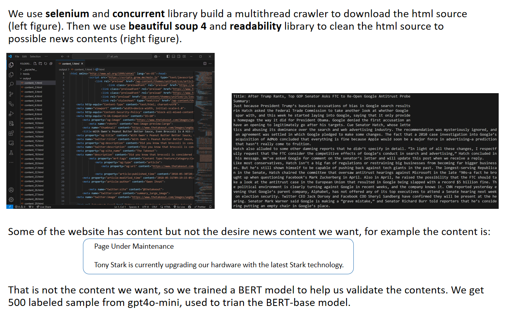

仇镜溪 Jingxi Qiu
Machine Learning
Natural Language Processing
Computer Vision
Education
M.S. in Data Science, Georgetown University (2023-2025)
B.S. in Finance / Minor in Math, Wenzhou-Kean University (2019-2023)
Skills
| Field | Skills |
|---|---|
| Programming | Python, JavaScript, R, SQL |
| NLP & Deep Learning | Transformers (BERT, LLaMA, RoBERTa, T5), LangChain, RAG, Hugging Face, spaCy |
| Computer Vision | Object Detection, Image Segmentation, Generative Adversarial Networks (GANs), ViT |
| Machine Learning | PyTorch, TensorFlow, Scikit-learn, XGBoost, LightGBM, SVM, Feature Engineering, Clustering |
| Model Deployment & MLOps | Flask, Streamlit, MLflow, Docker, AWS (SageMaker, EMR), GitHub Actions, CI/CD |
| Data Engineering | Pandas, NumPy, Polars, Spark (PySpark), Hadoop |
| Databases & Search | MySQL, PostgreSQL, MongoDB, Elasticsearch, Redis |
| Others | Rest APIs, Full-Stack Development, Big Data, Data Visualization, Tableau |
Publications
ProtSi: Prototypical Siamese Network with Data Augmentation for
Few-Shot Subjective Answer Evaluation (Arxiv, 2022)
Yining Lu, Jingxi Qiu, Gaurav Gupta
This paper proposes the ProtSi network, which applies few-shot
metric learning to automatic scoring of subjective questions:
using Siamese+BERT to construct similarity representations
aligned with standard answers, employing a prototype network for
classification, and introducing unsupervised regularization with
paraphrase consistency and contrastive learning to mitigate
overfitting in small samples and challenges with discriminative
text. It achieves higher QWK and accuracy on Kaggle short answer
datasets.
PDF
$$ L_1 = -\sum_{i} \sum_{n} y_{Q_i}^{(n)} \log p_i^{(n)} $$
$$ L_2 = -\sum_{s} \sum_{t} p_{st} \log p_{st} $$
$$ L_3 = \sum_{i} -\log \frac{\exp(\text{sim}(\delta_i, \delta'_i) / \tau)}{\sum_{j} \exp(\text{sim}(\delta_i, \delta'_j) / \tau)} $$
$$ L = t_α \times L_1 + (1 - t_α) \times L_2 + γ \times L_3 $$
Projects
- 1. Agent Model
- 2. Scraping-Cleaning-Analysis Pipeline
Since the projects do not involve particularly advanced technical
details,
I will present two projects to briefly explain my technical skills.
I will present two projects to briefly explain my technical skills.
Project 1 - Finance Agent Project
Project Architecture
- Frontend (Vue+ElementUI): Chat + Spending Overview.
- Backend (Django+DRF): Agent for interaction, history display, and analysis.
- Database: MySQL; plan to explore MongoDB.
Agent Tools - process receipt
User input
↓
OCR
↓
Reasoning
↓
Process Receipt

{
"merchant": "Costco Wholesale",
"time": "12/05/2024 17:50",
"good_list": [
{ "name": "***KSWTR40PK", "price": 3.99 },
{ "name": "***KSWTR40PK", "price": 3.99 },
{ "name": "UNREAL BARS", "price": 10.89 },
{ "name": "ORG BANANAS", "price": 2.49 },
{ "name": "3 WHOLE MILK", "price": 2.75 }
]
}
Agent Tools
category_merchant_tool
create_or_update_expense_tool
Agent Result
Backend Chain
Frontend Chat
Project 2 - Data Pipeline Project
Data Pipeline Project - Methods
Data Pipeline Project - Data
Data Pipeline Project - Crawler
Data Pipeline Project - LLaMA3.2-3B
Data Pipeline Project - Results
PhD Research Plan
- Short-term (1 year): Adapting CV models / SLMs to specialized domains for improved performance and applicability.
- Mid-term (2–3 years): Optimizing and deploying models on edge devices, with enhanced inference strategies under low-confidence conditions.
Thank You
Contact: jq167@georgetown.edu
My Website: https://website.jingxiqiu.com
Project 3 - CV GAN Project
Link to Full Report (PDF)Research Interests
-
主题 A|小型 LLM 的联合蒸馏 x
量化(DQ-Joint)服务于数据科学基础设施：
在端侧/边缘预算下，将教师–学生蒸馏与量化误差联合优化，产出更优的质量–延迟–内存前沿；面向
scientific workflows / software discovery / knowledge graph
等数据基础设施任务，提供可部署的小模型能力。
Topic A | Joint Distillation–Quantization for Small LLMs in Data Science Infrastructure: Under device/edge constraints, jointly optimize KD and quantization to achieve a better quality–latency–memory frontier, targeting scientific workflows, software discovery, and knowledge graphs. -
主题
B|预算感知的端云协同与兜底策略(面向可复现工作流与溯源)：
基于置信度、延迟与成本学习动态路由：端侧优先，低置信度或超预算时触发云兜底；在保持总体质量的同时显著降低云占比与尾延迟，并记录以支持工作流复现与审计。
Topic B | Budget-Aware Edge–Cloud Orchestration (for workflow reproducibility & provenance): Learn confidence/latency/cost-aware routing—edge first with cloud fallback—to cut cloud usage and tail latency at comparable quality, while logging provenance for reproducible workflows. -
主题 C|模块化 LLM 工具链(RAG/函数调用/轻量
Agent)赋能知识服务：
以小模型完成检索、重写、规划与工具调用，形成可编排的知识服务链；在端到端成功率与首次响应时间上优于单一大模型调用，并可与
knowledge graph 与软件服务目录对接。
Topic C | Modular LLM Toolchains (RAG / Function Calling / Lightweight Agents) for Knowledge Services: Compose small models for retrieval, rewriting, planning, and tool use; outperform single LLM calls on task success and first-response time, and integrate with knowledge graphs and software catalogs.